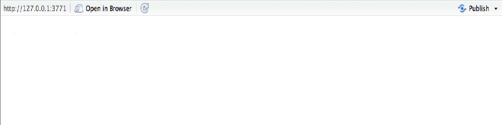

Let's Build a User Interface
code
library(shiny)
ui=fluidPage()
server=function(input,output){}
shinyApp(ui, server)
output
Layout
Shiny uses the function fluidPage to create a display that automatically adjusts according to the dimensions of user's browser window. we layout the user interface of our app by placing elements in the fluidPage function. For example, the ui function below creates a user interface that has a title panel and a sidebar layout , which includes a sidebar panel and a main panel. Note that these elements are placed within the fluidPage function.
code
ui = fluidPage(
titlePanel("title panel"),
sidebarLayout(
sidebarPanel("sidebar panel"),
mainPanel("main panel")
)
)